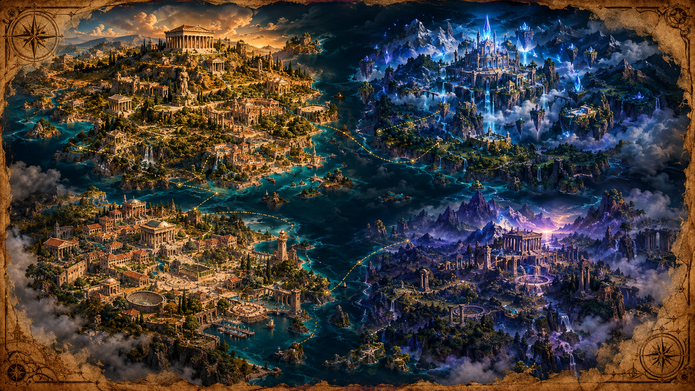

🧭
Viajante
Nível 1
0 / 100 EXP
✺
Conhecimento
0
◉
Regiões concluídas
0 / 4
Mapa do Mundo

♜
Grécia Antiga
▤
Reino do Conhecimento
☏
Cidade das Ideias
✺
Terras das Grandes Questões
📖 Diário
🎒 Inventário
⚙ Configurações
↩ Tela inicial